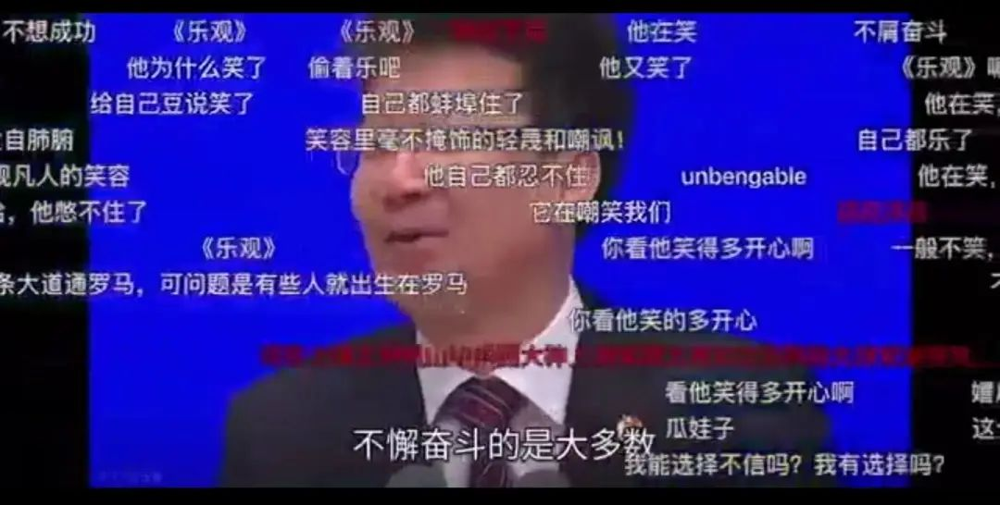
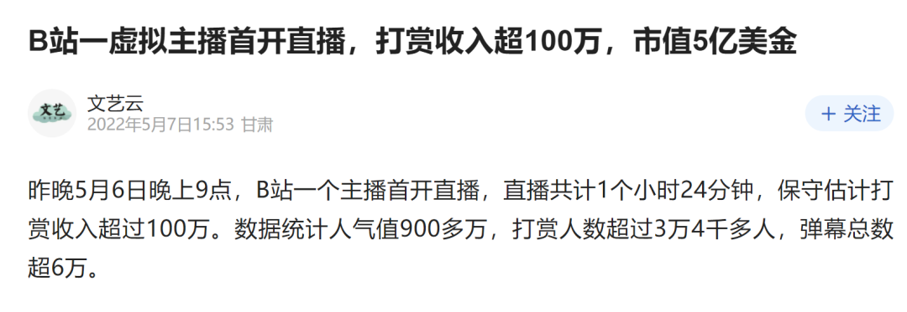
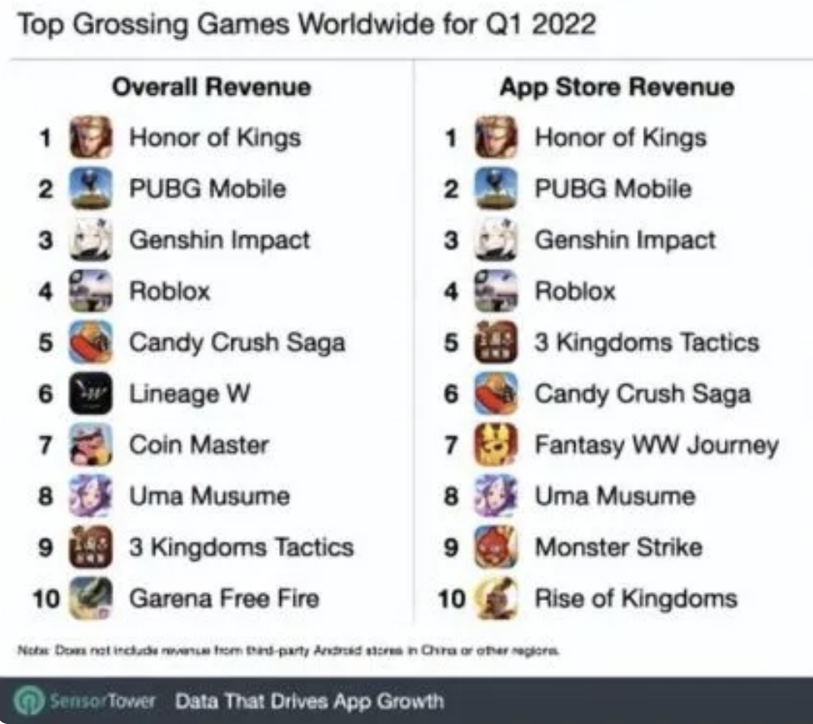
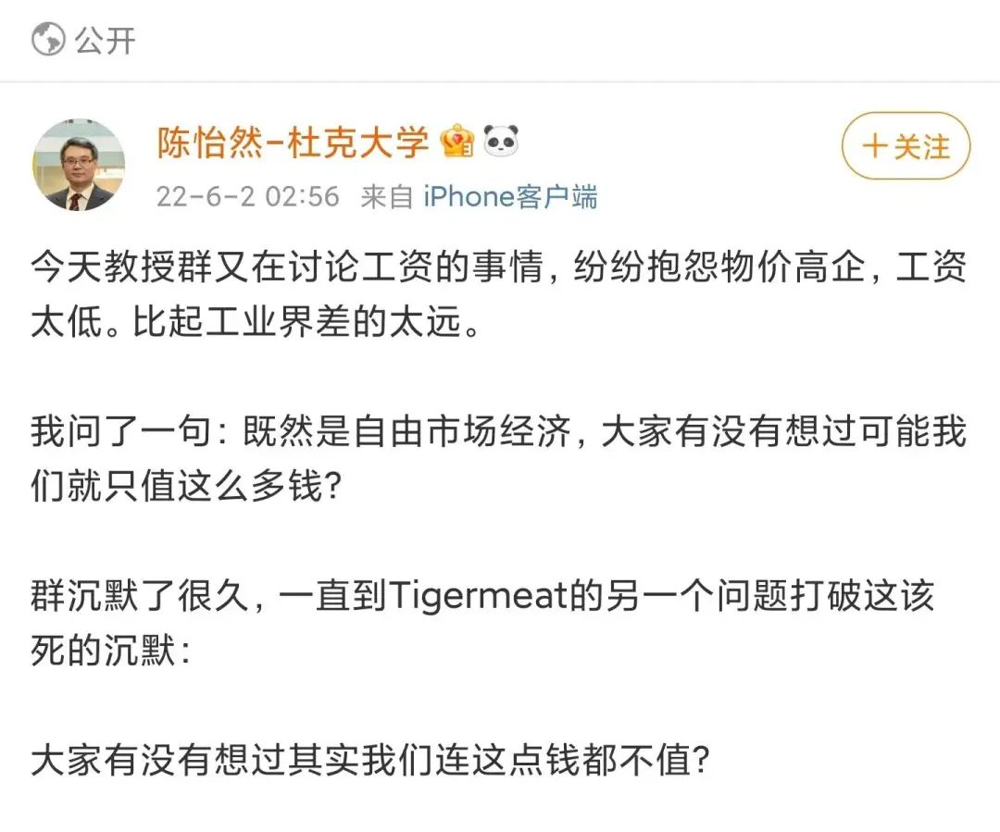
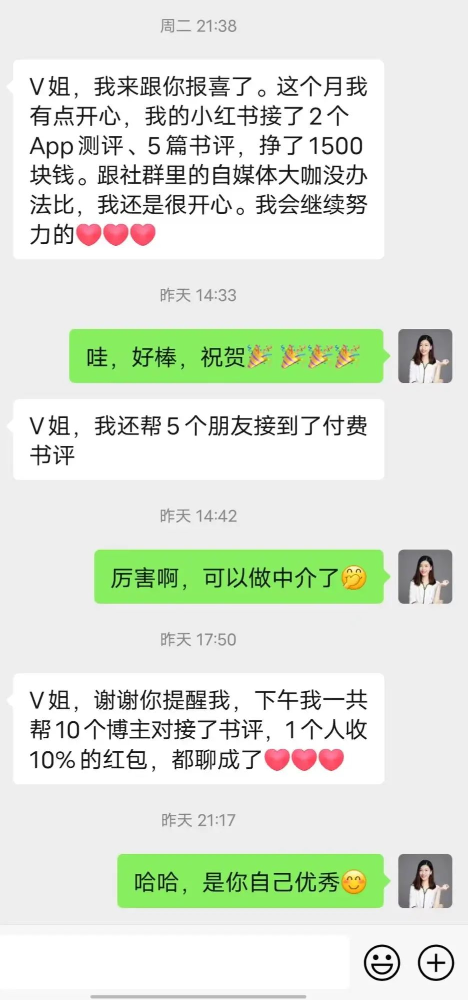

增长变慢时的财富密码
原创 V姐万事屋 V姐来了 2022-06-02 22:54 发表于上海
原文链接(长) 原文链接(短)
Hi, 我是V姐。
随着上海的解封，本号要从一个鸡汤号恢复正常了。
从现在开始，履行一个搞钱号的使命，回归初心。
跟大家汇报一下：疫情期间，我司线上业务正常开展，营收稳定，未向社会输送人才。我有空写写自媒体，运营我跟统一老师的社群，链接各行各业的牛逼人和潜力股。当然也关注经济环境，为资产做一些布局。
过去几个月，大家应该见证了互联网上的悲观和阴阳怪气达到顶峰。
地域黑，政策黑，性别黑满地跑，现实里唉声叹气，网上怼天怼地。
跟着骂没问题，问题是，然后呢？
该没有工作还是没有，该还的房贷却依然存在。
我不是一个学者，我是个生意人。所以无论看新闻还是观察人，我更擅长从中发现一些赚钱的机会。
官方曾经发过一个《新时代的中国青年》白皮书。发言人说：
_“当代青年的主流观点，仍然是他们相信成功主要靠个人努力奋斗才能够得来，绝大部分青年对于未来是乐观的。_”
你对这段话是什么感受，是嘲讽还是赞同？
这都没问题，最怕是想跟不同意见吵架，battle个300回合，非要说服对方。
在我的社群里，偶尔也会有朋友因为不同意见吵架，我一般会抛出一句话：
**各位朋友都是各行的中坚力量，不涉及利益的纷争，一毛钱不值啊。**
大家都是聪明人，群里马上会恢复和谐，吵什么吵呢，你来的目的是啥，说不定下回就有机会合作呢。
从赚钱角度说，我们要看见大多数人的情绪，而不是说服对方接受其他观点。
因此这段视频，我的关注点在弹幕。

**不带评价的观察，发现需求，是赚钱的第一步。**
这像不像日本平成年代的状况？
网上有个说法，昭和男儿，平成废物。
平成时代，也就是89年之后的日本年轻人，消极，躺平。草食男，肥宅等是他们的代名词。
说他们低欲望，是不消费吗？
当然不是了，游戏，动画，漫画，偶像等拔地而起，他们付费能力极强。
昭和男儿切腹忙，平成废物握手欢。
我打工时，搞不懂为什么会有握手会这种东西，现在市场琢磨多了，我悟了。
社会发展到一定程度，即便经济发展变慢，长期看，大家的可支配收入也是提高的，绝对贫困的人很少。
大家哭穷归哭穷，但其实消费力很可观。
吃饱了饭，就需要为情绪买单。
**吃饱了的愤怒和迷茫，就是平成时代的财富密码。**
不信你看：

22年1季度，全球最赚钱的手游，前3个都是中国的，分别是王者荣耀，和平精英，原神。

除了二次元和游戏之外，还有很多行业，都是经济下行时的香饽饽：
**星座，玄学，身心灵课程，心理咨询，娱乐主播，偶像创造，宠物行业。**
这些行业的共同点，是抚平吃饱了饭的迷茫和愤怒。
除了抚平，还有一条路，是迎合放大这种迷茫和愤怒的，比如持续骂TI ZHI，骂社会，挑动男女矛盾等等。
今年我看到甚至有小老板，用卖惨骂社会的套路卖货自救，疫情期间确实行得通。
但是这条路副作用很大。
长期迎合放大群体负面情绪，并试图获利的的，都很容易被反噬。我在前两天的文章 [我这解封了嘿](http://mp.weixin.qq.com/s?__biz=MzI1NjQ2ODIzMg==&mid=2247485835&idx=1&sn=fff2452d11f08613fa316b7ad9eb83be&chksm=ea277decdd50f4fa3884ebeadc5325a36eefaa84660135ba14c379affc662b838e881b55acf8&scene=21#wechat_redirect) 里有讲过部分原因。
《铁齿铜牙纪晓岚》里有个经典片段，皇上杀了杭州贪官王亶望，和珅说：
“ _百姓懂个什么大是大非呢？只要所杀之人比他们地位高，身价大，他们就心中暗喜。今天皇上杀了王亶望，百姓欢呼雀跃，明天皇上杀了你纪大人，百姓照样欢呼雀跃。”_
和珅这个人是贪官不错，但是他对于人性把握极准，不然不能把乾隆几十年哄得团团转，硬是舍不得杀他。
相应的，走抚平这条路，在困难的年代，市场充满增量，到处是蓝海。
这就好像古代年景不好，就是宗教大年，寺庙香火钱反而大增，甚至做起放贷的生意。
我知道很多朋友会脱口而出，这些行业有什么价值？能强国吗？凭什么他们赚这么多？科学家收入什么时候能提升？
首先声明，我举双手支持提升科学家收入。
然而科研是一件投入产出极度不确定的事情，当一个科研人员拿了大笔经费，但是没有出成果的时候，你们猜谁会最先阴谋论泼脏水？
我赌10块钱，是今天看到别人赚钱，愤愤不平，嚷着应该让科学家赚的。他们骂袁爷爷摸了一下豪车，可没有嘴下留情。
今天看到杜克大学计算机教授的社交媒体，很有意思：

陈教授或许是玩笑话，但是你也看到了，去工业界的一定赚得更多，哪里都一样。
这个等于走向市场，去直接满足用户的需求，解决用户的痛点。
不带偏见，去看见别人的需求，是一项能力。
合法合规地满足，赚钱是应该的。
**人不能一边呼唤市场经济，一边用自己的价值观来要求这个社会的财富分配。**
之前我分享过芯片这类硬科技行业很好，有机会进去就去。但是它门槛确实高，我们缺的是高端人才。
抚平吃饱了饭的迷茫和愤怒，这条路，门槛没有那么高，大多数，甚至没有专业的要求。
比如星座大号，情感专家，娱乐主播，好物推荐的博主等等。我社群有个朋友，兼职做了小红书，3000粉丝，前两天跟我报喜：

每个时代，赚到大钱的都是少数。
快速发展的时代，能够让大多数人的收入被动水涨创高。
增长变慢的时代，只能让少数真正具备赚钱能力的人，收入持续增长。
而这个能力，学校往往教不了，只能靠自己后天去摸索。
在困难的时代，有人把自己摸索成喷子，有人把自己摸索成牛人，有意思的是，前者很有可能是后者的金主爸爸。
所谓骂完夹总骂陈睿嘛。
如果大家经常骂一个博主，那么数据应该不错，人家会拉黑你，然后再多接几个广告，甚至我知道有不少dy博主，都是自备小号在底下引战的。
你在他这里发泄了，舒服了，他抚平你的愤怒，所以他应该赚钱。
又或者有博主营造一个岁月静好的场，进来可以放松，大家开开心心消费，他通过让你买买买暂时抚平迷茫。
生意的底层逻辑，有时候就是这么简单。